자동차정비기사 (2013-03-10 기출문제)
1과목: 일반기계공학
1. 주조품을 제조하기 위한 모형(Pattern) 중 코어 모형을 사용해야 하는 주물로 적합한 것은?
- 속이 빈 주물
- 크기가 작은 주물
- 크기가 큰 주물
- 외형이 복잡한 주물
(정답률: 82%)

2. 하중의 종류를 구분하는데 있어서 부하속도에 따라 분류된 하중의 종류가 아닌 것은?
- 변동하중
- 충격하중
- 전단하중
- 반복하중
(정답률: 63%)
3. 비틀림 모멘트 T를 받는 중심축의 원형 단면에서 발생하는 전단응력이 τ일 때 이 중심축의 지름 d를 구하는 식으로 옳은 것은?
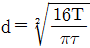
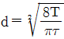
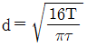
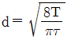
(정답률: 43%)
4. 나사 조립부에 진동과 충격을 받으면 순간적으로 접촉압력이 감소하여 마찰력이 거의 없어지며, 이런 현상이 반복되면 나사가 풀리는 원인이 된다. 이러한 나사의 풀림을 방지하는 방법으로 거리가 먼 것은?
- 스프링 와셔를 이용하여 조립한다.
- 로크너트를 사용 한다.
- 멈춤 나사를 사용한다.
- 캡 너트를 사용한다.
(정답률: 70%)
5. 미터 보통 나사에서 나사의 크기를 나타내는 호칭 지름(nominal diameter)은?
- 바깥지름
- 골지름
- 유효지름
- 리드
(정답률: 52%)
6. 슬라이드 밸브 등에서 밸브가 중립점에 있을 때 포트는 닫혀있고, 밸브가 조금이라도 변위하면 포트가 열리고 유체가 흐르도록 중복된 상태를 의미하는 유압 용어는?
- 램
- 제로 랩
- 오버 랩
- 언더 랩
(정답률: 62%)
7. 축(shaft)의 종류 중 전동축의 특수한 형태로 축의 지름에 비하여 길이가 짧은 축을 의미하는 것으로 형상과 치수가 정밀하고 변형량이 극히 작아야 하는 것은?
- 스핀들
- 차축
- 크랭크축
- 중공축
(정답률: 70%)
8. 보의 재료가 선형 탄성적이고, 후크의 법칙을 따른다고 할 때 보의 처짐에 관한 설명으로 옳은 것은?
- 곡률반경과 굽힘모멘트는 비례한다.
- 곡률은 탄성계수에 비례한다.
- 곡률이 클수록 굽힘모멘트는 커진다.
- 굽힘강성(EI)잉 클수록 곡률반경이 작아진다.
(정답률: 29%)
9. 선반가공에서 지름 10㎜인 연강을 20m/min로 가공할 때 분당 회전수는 약 몇 rpm인가?
- 318
- 636
- 999
- 1998
(정답률: 68%)
10. 담금질한 강을 변태점 이하 온도로 가열하여 인성을 증가시키는 열처리는?
- 풀림(annealing)
- 불림(normalizing)
- 뜨임(tempering)
- 서브제로(subzero) 처리
(정답률: 84%)
11. 용접법 중 하나인 납땜에 관한 설명으로 틀린 것은?
- 동일한 종류의 금속 또는 이종의 금속을 접합하려할 때 접합할 모재는 용융시키지 않고 모재보다 용융점이 낮은 용가재를 사용하여 접합하는 방법이다.
- 사용하는 용가재의 종류에 따라 크게 연납과 경납으로 구분된다.
- 융점이 450℃ 이상인 용가재를 사용하여 납땜하는 것을 연납땜이라고 하고 450℃ 이하인 용가재를 사용하여 납땜하는 것을 경납땜이라고 한다.
- 납땜의 성패는 용접 모재인 고체와 땜납인 액체가 어느 만큼의 친화력을 갖고 서로 접촉할 수 있느냐에 달려 있다.
(정답률: 59%)
12. 파이프 유동에서 Reynolds 수(Re)가 약 몇 이하일 경우 층류 유동으로 볼 수 있는가?
- Re=600
- Re=2100
- Re=5200
- Re =14000
(정답률: 73%)
13. 코일 스프링에서 스프링상수(k)에 대한 설명으로 틀린 것은?
- 스프링상수는 스프링 소재의 전단탄성계수에 비례한다.
- 스프링상수는 스프링 소재의 지름의 4승에 비례한다.
- 스프링상수는 코일의 평균지름 3승에 반비례한다.
- 스프링상수는 스프링의 유효감김수에 비례한다.
(정답률: 37%)
14. 황동에서 주로 발생하는 화학적 변형에 속하지 않는 것은?
- 탈아연 부식(dezincification corrosion)
- 자연균열(seasoning cracking)
- 청열취성(blue short ness)
- 고온 탈아연(dezincing)
(정답률: 75%)
15. 유압기기의 제어밸브를 기능면에서 크게 3가지로 구분할 때 이에 속하지 않는 것은?
- 압력제어 밸브
- 방향제어 밸브
- 유량제어 밸브
- 온도제어 밸브
(정답률: 73%)
16. 축의 휨, 원통의 진원도 측정에 가장 적합한 측정기는?
- 다이얼 게이지
- 하이트 게이지
- 버니어캘리퍼스
- 각도 게이지
(정답률: 80%)
17. 탄소강에서 상온취성을 일으키는데 가장 큰 영향을 주는 원소는?
- Si(규소)
- S(황)
- Mn(망간)
- P(인)
(정답률: 57%)
18. 판금 공작법 중 지름이 같은 두 원통을 서로 겹쳐 끼우기 위하여 원통의 끝 부분에 주름을 잡아 지름을 약간 감소시키는 작업을 무엇이라고 하는가?
- 크림핑
- 비딩
- 터닝
- 스피닝
(정답률: 52%)
19. 기어 잇수가 각각 19개, 56개 이고, 기어의 모듈은 4, 입력각이 20°인 한 쌍의 표준 스퍼기어 장치의 기어 중심 간 거리는 약 몇 ㎜인가?
- 79.81
- 75
- 159.62
- 150
(정답률: 16%)
20. 강철봉을 기온이 30~60℃인 상태에서 240N/cm2의 인장응력을 발생시켜 놓고 양단을 고정하였다. 이봉을 60℃로 기온을 상승시키면 강철봉에 발생하는 응력은 어떻게 되는가? (단, 세로탄성계수는 E=2×106N/cm2, 선팽창계수는 α=1×10-5/℃이다.)
- 840N/cm2의 인장응력이 발생한다.
- 360N/cm2의 압축응력이 발생한다.
- 600N/cm2의 인장응력이 발생한다.
- 600N/cm2의 압축응력이 발생한다.
(정답률: 51%)
2과목: 기계열역학
21. 기체가 0.3MPa로 일정한 압력 하에서 8m3에서 4m3까지 마찰 없이 압축도면서 동시에 500kJ의 열을 외부에 방출하였다면, 내부에너지(kJ)의 변화는 얼마나 되겠는가?
- 약 700
- 약 1700
- 약 1200
- 약1300
(정답률: 58%)
22. 어떤 가스의 비내부에너지 u(kJ/Kg), 온도 t(℃), 압력 P(kPa), 비체적 v(m3/kg)사이에는 다음의 관계식이 성립한다. 이 가스의 정압비열은 얼마 정도이겠는가?
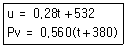
- 0.84kJ/Kg℃
- 0.68kJ/Kg℃
- 0.50kJ/Kg℃
- 0.28kJ/Kg℃
(정답률: 47%)
23. 잘 단열된 노즐에서 공기가 0.45MPa에서 0.15MPa로 팽창한다. 노즐 입구에서 공기의 속도는 50m/s, 온도는 150이며 출구에서의 온도는 45이다. 출구에서의 공기 속도는?
- 약 350m/s
- 약 363m/s
- 약 445m/s
- 약 462m/s
(정답률: 19%)
24. 다음 사항은 기계열역학에서 일과 열에 대한 설명이다. 이 중 틀린 것은?
- 일과 열은 전달되는 에너지이지 열역학적 상태량은 아니다.
- 일의 단위는 J(Joule)이다.
- 일(work)의 크기는 힘과 그 힘이 작용하여 이동한 거리를 곱한 값이다.
- 일과 열은 점함수이다.
(정답률: 57%)
25. 10kg의 증기가 온도 50℃, 압력 38MPa, 체적 7.5m3일 때, 총 내부에너지는 6700kJ이다. 이와 같은 상태의 증기가 가지고 있는 엔탈피(enthalpy)는 몇 kJ인가?
- 1606
- 1794
- 23⑤
- 6985
(정답률: 39%)
26. 227의 증기가 500kJ/kg의 열을 받으면서 가역등온팽창한다. 이때 증기의 엔트로피 변화는 약 얼마인가?
- 1.0 kJ/kg·k
- 1.5kJ/kg·k
- 2.5kJ/kg·k
- 2.8kJ/kg·k
(정답률: 32%)
27. 가역 단열펌프에 100kPa, 50의 물이 2kg/s로 들어가 4MPa로 압축된다. 이 펌프의 소요동력은? (단, 50에서 포화액체(saturated liquid)의 비체적은 0.001/kg이다.)
- 3.9kW
- 4.0kW
- 7.8kW
- 8.0kW
(정답률: 40%)
28. 증기터빈 발전소에서 터빈 입·출구의 엔탈피 차이는 130kJ/kg이고, 터빈에서의 열손실은 10kJ/Kg이었다. 이 터빈에서 얻을 수 있는 최대 일은 얼마인가?
- 10kJ/kg
- 12kJ/kg
- 130kJ/kg
- 140kJ/kg
(정답률: 50%)
29. 어떤 냉장고의 소비전력이 200W이다. 이 냉장고가 부엌으로 배출하는 열이 500W라면, 이때 냉장고의 성능계수는 얼마인가?
- 1
- 2
- 0.5
- 1.5
(정답률: 57%)
30. 시스템의 온도가 가열과정에서 10℃에서 30℃로 상승하였다. 이 과정에서 절대온도는 얼마나 상승하였는가?
- 11K
- 20 k
- 293K
- 303K
(정답률: 67%)
31. 열펌프의 성능계수를 높이는 방법이 아닌 것은?
- 응축 온도를 낮춘다.
- 증발온도를 낮춘다.
- 손실 일을 줄인다.
- 생성엔트로피를 줄인다.
(정답률: 62%)
32. 매시간 20kg의 연료를 소비하는 100PS인 가솔린 기관의 열효율은 약 얼마인가? (단, 1PS=750W이고, 가솔린의 저위발열량은 43470kJ/kg이다.)
- 18%
- 22%
- 31%
- 43%
(정답률: 58%)
33. 공기 10kg이 압력 200kPa 체척 5m3인 상태에서 압력 400kPa 온도 300℃인 상태로 변했다면 체적의 변화는? (단, 공기의 기체상수 R=0.287kJ/kg·K이다.)
- 약 ＋0.6m3
- 약 ＋0.9m3
- 약 -0.6m3
- 약 -0.9m3
(정답률: 47%)
34. 이상기체의 가역단열 변화에서는 압력 P, 체적 V, 절대온도 T사이에 어떤 관계가 성립하는가? (단, 비열비 k=Cp/Cv이다.)
- PV=일정
- PVk-1=일정
- PTk=일정
- PVK-1=일정
(정답률: 24%)
35. 증기동력 사이클에 대한 다음의 언급 중 옳은 것은?
- 이상적인 보일러에서는 등온 가열 과정이 진행된다.
- 재열 사이클은 주로 사이클 효율을 낮추기 위해 적용한다.
- 터빈의 토출압력을 낮추면 사이클 효율도 낮아진다.
- 최고 압력을 높이면 사이클 효율이 높아진다.
(정답률: 52%)
36. 압력 5kPa, 체적이 0.3m3인 기체가 일정한 압력 하에서 압축되어 0.2m3로 되었을 때 이 기체가 한 일은? (단, ＋는 외부로 기체가 일 한 경우이고, -는 기체가 외부로부터 일을 받은 경우)
- 500J
- –500J
- 1000J
- -1000J
(정답률: 66%)
37. 이상기체 1kg이 가역등온 과정에 따라 P1=2kPa, V1=0.1m3로부터 V2=0.3m3로 변화했을 때 기체가 한 일은 몇 주울(J)인가?
- 9540
- 2200
- 954
- 220
(정답률: 50%)
38. 다음 그림은 오토 사이클의 P-V선도이다. 그림에서 3-4가 나타내는 과정은?
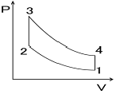
- 단열 압축과정
- 단열 팽창과정
- 정적 가열과정
- 정적 방열과정
(정답률: 69%)
39. 공기표준 Carnot 열기관 사이클에서 최저 온도는 280K이고, 열효율은 60%이다. 압축 전 압력과 열을 방출한 후 압력은 100kPa이다. 열을 공급하기 전의 온도와 압력은? (단, 공기의 비열비는 1.4이다.)
- 700K, 2470kPa
- 700K, 2200kPa
- 600K, 2470kPa
- 600K, 2200kPa
(정답률: 43%)
40. 400k의 물 1.0kg/s와 350k의 물 0.5kg/s가 정상과정으로 혼합되어 나온다. 이 과정 중에 300kJ/s의 열손실이 있다. 출구에서 물의 온도는 약 얼마인가?
- 369.2K
- 350.1K
- 335.5K
- 320.3K
(정답률: 42%)
3과목: 자동차기관
41. LPG 연료장치에서 연료 계통을 바르게 나열한 것은?
- LPG탱크 → LPG솔레노이드밸브 → 믹서 → 베이퍼라이저 → LPG역과기 → 실린더
- LPG탱크 → 베이퍼라이저 → 믹서 → LPG솔레노이드밸브 → LPG여과기 → 실린더
- 베이퍼라이저 → LPG탱크 → 믹서 → LPG솔레노이드밸브 → 실린더
- LPG탱크 → LPG여과기 → LPG솔레노이드밸브 → 베이퍼라이저 → 믹서 → 실린더
(정답률: 49%)
42. 디젤기관의 기계식 연료분사장치에서 연소과정에 영향을 주는 변수와 가장 거리가 먼 것은?
- 연료 분사 시기
- 분사지속 시간과 분사율
- 무효분사 시간
- 분사방향
(정답률: 59%)
43. 피스톤 링의 역할로 틀린 것은?
- 피스톤의 상하운동 시 균형을 잡는다.
- 피스톤과 실린더 사이를 밀봉시킨다.
- 실린더 벽면의 윤활유를 긁어내린다.
- 피스톤의 열을 실린더에 전달한다.
(정답률: 72%)
44. 전자제어 CRDI(Common Rail Direct Injection) 디젤엔진에서 저속 시 연소실에서의 공기 유동인 소용돌이 현상을 일으켜 매연을 저감하기 위한 장치는?
- 가변 용량제어 터보차저(VGT)
- 에어 콘트롤 밸브 (ACV)
- 슈퍼차저(SCG)
- 가변 스월 장치 (SCV)
(정답률: 63%)
45. 복합사이클에서 압축비 15:1, 체적비 ρ=2, 단절비 σ=1.3, 비열비 k=1.4일 때 이 엔진의 이론 열효율은?
- 35%
- 56%
- 65%
- 69%
(정답률: 23%)
46. 디젤 기관의 연소실 구비 조건으로 맞지 않는 것은?
- 분사된 연료를 짧은 시간에 완전 연소시켜야 한다.
- 평균 유효압력이 낮으며, 연료소비율이 적어야 한다.
- 고속 회전시의 연소 상태가 좋아야 한다.
- 시동이 용이하고 디젤 노크가 적어야 한다.
(정답률: 76%)
47. 기관은 운전 중에 여러 가지 불평형력(unbalance force)이 발생한다. 이것은 소음, 진동문제를 발생시키므로 가능한 제거하여 평형이 되도록 해야 한다. 기관의 평형에 영향을 미치는 부품만으로 나열된 것은?
- 크랭크축, 플라이 휠, 피스톤, 크랭크 축 풀리
- 크랭크축, 플라이 휠, 피스톤, 실린더 헤드
- 크랭크축, 플라이 휠, 피스톤, 실린더 블록
- 크랭크축, 실린더 헤드, 피스톤, 크랭크축 풀리
(정답률: 65%)
48. 유해 배기가스의 청정화 시스템 중 실린더 내에서의 생성억제(전처리방식)에 해당되지 않는 것은?
- 연소실 형상, 압축비, 밸브타이밍
- 2차 공기 분사장치
- 배기가스 재순환 장치
- 연비, 점화시기, 냉각수 온도의 매칭
(정답률: 49%)
49. 전자제어 가솔린 엔진의 연료분사장치에서 엔진부하와 rpm에 따라 신호전압이 급격히 변화하는 센서는?
- 차속센서
- 크랭크 포지션 센서
- 캠 포지션 센서
- MAP센서
(정답률: 43%)
50. DOHC 엔진의 특징이 아닌 것은?
- 구조가 간단한다.
- 응답성이 좋다.
- 최고 회전수가 향상된다.
- 흡입효율이 향상된다.
(정답률: 74%)
51. 자동차 기관에 오일을 공급하는 방식에서 압송식의 장점이 아닌 것은?
- 베어링 면의 유압이 높아 항상 완전한 급유가 가능
- 크랭크케이스 내의 오일이 약간 부족해도 급유가능
- 각 주유부의 오일 공급을 골고루 할 수 있다.
- 배유관의 고장이나 오일 통로가 막혀도 오일 공급을 할 수 있다.
(정답률: 59%)
52. 과급장치에서 인터쿨러의 필요성을 바르게 설명한 것은?
- 과급공기의 냉각을 통한 정미열효율의 향상
- 흡입공기의 예열을 통한 연소효율 향상
- 공기밀도의 증가를 통한 충전효율의 향상
- 과급장치의 냉각을 통한 기계효율의 향상
(정답률: 57%)
53. 어떤 기관에서 비중 0.75 저위발열량 1⑤00kcal/kg의 연료를 사용하여 0.5시간 시험하였더니 연료 소비량은 5L이었다. 이 기관의 연료 마력은?
- 100PS
- 125PS
- 1500PS
- 7500PS
(정답률: 41%)
54. 디젤(압축착화-CIE) 기관에서의 노킹(knocking)의 방지책이 아닌 것은?
- 분사 초기에 연료 분사량을 증가시킨다.
- 흡입공기에 와류를 형성시켜 준다.
- 압축비를 증가시켜 압축압력과 온도를 높인다.
- 연료의 착화지연시간을 짧게 한다.
(정답률: 52%)
55. 전자제어 디젤연료분사장치에 대한 설명으로 틀린 것은?
- 스로틀 센서는 가속 시 증량보정과 비동기 분사제어를 수행한다.
- 연료 압력센서는 커먼레일 압력을 측정하여 연료분사량과 분사시기를 조절 한다.
- 연료온도 센서는 연료온도를 측정하여 보정하는 역할을 한다.
- 공기유량 센서는 EGR피드백 컨트롤 제어에 사용된다.
(정답률: 25%)
56. 평균 유효압력에 대한 설명으로 틀린 것은?
- 평균 유효압력이란 1사이클의 일을 행정 체적으로 나눈 것
- 도시평균유효압력 = 이론평균유효압력 × 선도계수
- 제동평균 유효압력 = 도시평균유효압력 × 체적효율
- 마찰평균유효압력 = 도시평균유효압력 - 제동평균유효압력
(정답률: 46%)
57. 전자제어 연료분사장치의 인젝터에서 연료분사량을 결정하는 요인이 아닌 것은?
- 노즐의 지름
- 연료의 압력
- 니들밸브가 열려 있는 시간
- 인젝터 재질
(정답률: 70%)
58. 가솔린 기관의 인젝터 작동 시 분사량에 가장 영향을 주는 것은?
- 니들밸브의 유효 행정
- 인젝터 솔레노이드 코일의 통전 전류
- 인젝터 솔레노이드 코일의 통전 시간
- 니들 밸브의 지름
(정답률: 79%)
59. 운행차 배출가스 정기검사에서 휘발유사용 자동차의 배출가스를 측정할 때 시료 채취관을 배기관내에 얼마 이상 삽입하여야 하는가?
- 15㎝
- 20㎝
- 25㎝
- 30㎝
(정답률: 56%)
60. 전자제어 가솔린 기관에서 크랭킹은 되지만 시동이 안 되는 원인으로 틀린 것은?
- 시동모터 불량
- 파워 TR 불량
- 점화코일의 배선 연결 상태가 불량
- 점화 계통의 퓨즈 단선
(정답률: 59%)
4과목: 자동차새시
61. 공기 저항에 대한 설명 중 틀린 것은?
- 차체의 앞부분에서의 압력과 뒷부분에서 생기는 부압과의 압력 차이로 발생되는 현상 또 압력저항
- 자동차가 속도를 증가시킬 때에 발생되는 관성에 의한 저항
- 자동차 고속 주행할 때 양력의 발생으로 생기는 저항인 유도 저항
- 자동차 표면에 흐르는 공기와의 마찰
(정답률: 59%)
62. 전자제어 현가장치의 입·출력 요소에서 출력에 해당하는 것은?
- 쇼크업소버의 감쇠력을 변화시키는 액추에이터
- 차량의 높이를 감지하는 차고 센서
- 제동 시 다이브(dive)제어의 기준 신호가 되는 브레이크 스위치
- 주행 중 전조등의 점등을 알려주는 전조등 스위치
(정답률: 55%)
63. 슬립률이란 제동 시 차량의 속도와 타이어의 회전속도와의 관계를 나타내는 것으로 타이어와 노면 사이의 마찰력을 슬립률에 따라 변한다. 다음 중 슬립률을 구하는 공식은? (여기서 λ은 슬립률, V는 차속, Vw는 휠의 속도이다.)
- λ = (V-Vw)/V × 100
- λ = V/Vw × 100
- λ = (Vw-V)/Vw × 100
- λ = (Vw＋V)/V × 100
(정답률: 52%)
64. 자동차 섀시 스프링 중 스프링 상수가 자동적으로 조정되는 것은?
- 판스프링
- 공기 스프링
- 코일 스프링
- 토션바 스프링
(정답률: 67%)
65. 차실의 통로에 대한 안전기준이 아닌 것은?
- 통로의 유효너비는 60㎝ 이상이다.
- 통로는 승차정원 16인승 이상 자동차에 설치하여야 한다.
- 2층 대형승합자동차에는 위층과 연결되는 계단식 통로를 설치하여야 한다.
- 통로에 접이식 좌석을 설치한 자동차에 있어서 좌석을 접을 경우 유효너비를 확보한 경우에는 설치하지 않아도 된다.
(정답률: 50%)
66. 수동변속기에서 싱크로메시 기구가 작용하는 시기는?
- 기어 변속기 클러치 페달을 뗄 때 작용한다.
- 기어 변속기 기어가 물릴 때 작용한다.
- 기어 변속기 클러치 페달을 밟을 때 작용한다.
- 기어변속이 해제될 때 작용한다.
(정답률: 66%)
67. 고속도로를 100km/h의 속도로 주행하는 자동차의 중량이 3500kgf이며, 회전관성중량이 차량중량의 10%일 때 정지거리는 얼마인가? (단, 제동력은 전류 3000kgf, 320kgf, 후륜 400kgf, 420kgf이고, 공주시간은 0.1초이다.)
- 108m
- 100m
- 95m
- 90m
(정답률: 31%)
68. 전자제어 자동변속기에서 차속 센서에 대한 내용으로 가장 알맞은 것은?
- 반드시 마그네트 방식이어야 한다.
- 펄스제네레이터와 스로틀 센서를 보정하여 변속시기를 결정한다.
- 거버너 밸브가 고장 시 작동하여 변속을 원활하게 한다.
- 유온센서 고장 시 변속을 원활하게 한다.
(정답률: 66%)
69. 자동차 현가장치의 스프링 위 질량 진동에서 Z축을 중심으로 회전운동을 하는 고유진동은?
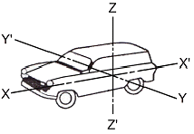
- 와인드업(wind up)
- 피칭(pitching)
- 휠 트램프(wheel tramp)
- 요잉(yawing)
(정답률: 59%)
70. 추진축의 자재이음을 사용하는 이유는?
- 추진축의 길이 변화에 대응하기 위하여
- 추진축의 강한 회전력을 흡수화기 위하여
- 교차하는 두 축의 자유로운 동력전달을 위하여
- 추진축의 소음을 줄이기 위하여
(정답률: 59%)
71. 유압식 디스크 브레이크의 특징이 아닌 것은?
- 패드에 누르는 힘을 크게 할 필요가 있다.
- 주행 시 반복 사용하여도 제동력 변화가 적다.
- 열변형에 의한 제동력 변화가 많다.
- 자기 작동이 발생하지 않는다.
(정답률: 46%)
72. 자동차용 자동변속기 유체 클러치에서 스톨 포인트에 대한 설명으로 틀린 것은?
- 펌프는 회전하나 터빈이 회전하지 않는 점이다.
- 스톨 포인트에서 회전력비가 최대가 된다.
- 속도비가 '0'인 점이다.
- 소톨 포인트에서 효율이 최대가 된다.
(정답률: 49%)
73. 자동차의 조향 핸들 조작을 가볍게 하기 위한 방법으로 거리가 먼 것은?
- 저속으로 주행 한다.
- 앞바퀴 정렬을 정확히 한다.
- 자동차의 하중을 작게 한다.
- 타이어의 공기압을 높인다.
(정답률: 57%)
74. 전자제어 동력조향장치(ECPS : Electronic Control Power Steering)에서 솔레노이드 밸브이 작동과 관계가 먼 것은?
- 엔진 회전수
- 차량 속도
- 조향기어의 유량
- 솔레노이드밸브의 전류량
(정답률: 46%)
75. 동력 조향장치에서 오일 리저버 탱크에 공기가 혼입되는 현상이 생기는 원인으로 가장 적합한 것은?
- 파워핸들 기어박스의 불량
- 저압 파이프에서의 누설
- 오일 순환통로의 막힘
- 오일펌프 구동벨트의 슬립
(정답률: 60%)
76. 자동차 타이어의 편평비란?
- 타이어 내경을 타이어 폭으로 나눈 백분율
- 타이어 폭을 타이어 단면 높이로 나눈 백분율
- 타이어 단면 높이를 타이어 폭으로 나눈 백분율
- 타이어 단면 둘레를 타이어 높이로 나눈 백분율
(정답률: 50%)
77. 자동차용 수동변속기 클러치판에서 비틀림 코일 스프링의 역할은?
- 클러치면이 미끄러지는 것을 방비
- 클러치스프링의 장력 보완
- 클러치 접속 시의 회전충격 흡수
- 클러치판의 파손방지
(정답률: 71%)
78. 단순 유성기어 장치에서 링기어가 출력축이고 선기어가 구동, 캐리어가 고정되었다면 링기어의 회전력은?
- 증속
- 감속
- 역전증속
- 역전감속
(정답률: 46%)
79. ABS제어에서 출력 요소가 아닌 것은?
- 모터 릴레이
- 휠 스피드 센서
- 밸브 솔레노이드
- 경고등
(정답률: 61%)
80. ESP(Electronic Stability Program)제어에서 요 컨트롤 기능을 수행하기 위한 센서가 아닌 것은?
- 임팩트 센서
- 횡 가속도 센서
- 마스터실린더 압력센서
- 조향각 센서
(정답률: 52%)
5과목: 자동차전기
81. 자동차 전조등의 1등 당 광도는 주행빔의 경우 최대 몇 칸델라 이하인가?
- 75000칸델라
- 95000칸델라
- 112500칸델라
- 211500칸델라
(정답률: 65%)
82. 전기자 전류가 20A일 때 10m·kgf의 토크를 내는 직권전동기가 있다. 이 전동기의 전기자 전류가 40A일 때의 토크(Torque)는?
- 20m·kgf
- 30m·kgf
- 40m·kgf
- 50m·kgf
(정답률: 31%)
83. 다음 그림은 4행정 가솔린 기관에서 배전기 축이 1회전 하는 동안의 파형 변화이다. 이 파형은 어떤 센서의 출력 파형인가?
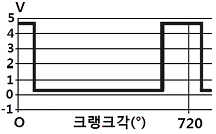
- 1번 실린더 TDC센서
- 산소센서
- 대기압 센서
- 수온센서
(정답률: 76%)
84. 공기조화 장치에서 차 실내 공기온도를 제어하기 위한 센서가 아닌 것은?
- 차량 실내온도 센서
- 차량실외 온도 센서
- 일사센서
- 압축기 온도 센서
(정답률: 72%)
85. 가솔린기관의 점화장치에서 점화코일의 1차 코일저항이 무한대로 측정될 때의 원인으로 적합한 것은?
- 코일 단선
- 코일단락
- 절연 불량
- 코일 접지
(정답률: 49%)
86. 자동차의 충전장치회로에서 아날로그형 멀티미터로 트리오 다이오드를 점검하는 내용으로 알맞은 것은?
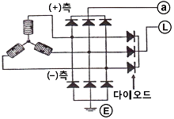
- 시험기의 적색, 흑색단자를 교대해서 다이오드(＋), (-) 단자에 점검했을 때 한쪽방향만 통전되면 단락된 것이다.
- 시험기의 적색, 흑색단자를 교대해서 다이오드(＋), (-) 단자에 점검했을 때 한쪽방향만 통전되면 단선된 것이다.
- 시험기의 적색, 흑색단자를 교대해서 다이오드(＋), (-) 단자에 점검했을 때 양방향 모두 비통전 되면 정상이다.
- 시험기의 적색, 흑색단자를 교대해서 다이오드(＋), (-) 단자에 점검했을 때 양방향 모두 통전되면 단락된 것이다.
(정답률: 49%)
87. 기동전동기의 구비 조건이 아닌 것은?
- 소형경량이며 출력이 커야 한다.
- 주행 시 발생하는 진동에 견딜 수 있어야 한다.
- 시동 전동기는 시동 토크가 큰 교류, 직권 전동기를 사용한다.
- 전원용량이 적어도 작동이 잘되고 먼지나 물이 들어가지 않는 구조이어야 한다.
(정답률: 57%)
88. 냉방장치에서 에어컨을 작동 시킨 후 압력게이지로 압력을 측정한 결과 고압이나 저압의 차이가 많지 않고, 고압은 정상보다 낮게, 저압은 높게 측정 되었다면 결함사항 중 가장 적합한 것은?
- 냉매 충전량이 너무 많다.
- 에어컨 시스템에 공기가 혼입되었다.
- 에어컨 시스템에 수분이 혼입되었다.
- 압축기의 압축불량이다.
(정답률: 69%)
89. 1차 쪽에 발생된 전압 E1, 1차 코일의 권수 N1, 2차 쪽에 발생된 전압 E2, 2차 코일의 권수 N2일 경우, 상호유도작용 관계식은?
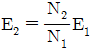
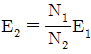
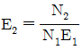
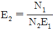
(정답률: 54%)
90. 전조등의 자동 점등 및 소등 장치를 작동시키기 위하여 설치하는 조명도 센서로 사용되는 것은?
- 사이리스터(thyristor
- 서미스터(thermistor)
- 제너 다이오드(zener diode)
- 포토 다이오드 (photo diode)
(정답률: 65%)
91. 축전기의 종류가 아닌 것은?
- 종이 축전기
- 전해 축전기
- 세라믹 축전기
- 석면 축전기
(정답률: 61%)
92. 전자배전 점화방식(DLI) 또는 독립 점화방식에서 점화 순서를 결정하는 입력 신호로 맞는 것은?
- TDC센서
- 노킹 센서
- 산소센서(O2)
- 흡기온도 센서(ATS)
(정답률: 68%)
93. 자동차 소음 측정에 관한 설명으로 옳은 것은?
- 암소음의 크기는 10dB 이하이어야 한다.
- 풍속이 5m/sec 이상일 때에는 측정을 삼간다.
- 주변소음에 영향을 받지 않는 옥내에서 측정한다.
- 마이크로폰 설치중심으로부터 반경 5m 이내에는 돌출 장애물이 없어야 한다.
(정답률: 43%)
94. 디젤기관에서 코일식 예열 플러그에 대한 설명으로 틀린 것은?
- 히트 코일이 노출되어 있어 적열 시간이 짧다.
- 저항값이 작아 직렬로 결선 한다.
- 예열 플러그 저항기를 두어야 한다.
- 저항값이 커서 병렬로 결선 한다.
(정답률: 57%)
95. 자동차용 에어백장치에서 에너지 공급 장치란?
- 에어백 인플레이터에 직접 공급되는 배터리 전원장치를 말한다.
- 전원 차단 시에도 일정시간 ECU내부의 콘덴서에 의해 에어백이 작동하도록 하는 장치이다.
- 충돌 시 에어백 작동을 위한 승압장치를 말한다.
- 에어백 시스템의 고장 발생 시 경고를 하기 위한 전원장치이다.
(정답률: 61%)
96. 조명 장치 중에서 HID(High Intensity Discharge)램프에 대한 특징으로 틀린 것은?
- 할로겐전구에 비해 소비저력이 40% 이상 적다.
- 할로겐전구에 비해 발광량이 3배에 달한다.
- 할로겐전구에 비해 가격이 저렴하다.
- 할로겐전구에 비해 거의 4배나 수명이 길다.
(정답률: 64%)
97. 교류 발전기의 내부구조에서 계절의 역할은?
- 전류의 손실방지
- 자력의 손실방지
- 형태의 변화방지
- 전압 강하방지
(정답률: 56%)
98. 신 냉매(R134a)의 특성으로 틀린 것은?
- 역화 및 증발이 용이 하다.
- 화학적으로 안정적이고 내열성이 좋다.
- 온난화 계수가 R-12보다 낮으며 오존파괴 계수가 10을 넘지 않는다.
- 압축기 오일은 합성유를 사용해야 한다.
(정답률: 42%)
99. 코일의 권수 150회의 코일이 5[A]의 전류를 흐르게 하였을 때, 6×10-2[wb]의 자속이 교체하였다면 이 코일의 자기 인덕턴스는?
- 1.5[H]
- 1.8[H]
- 2.2[H]
- 3.8[H]
(정답률: 71%)
100. 자동차용 축전지의 사이클링(cycling) 쇠약이란?
- 과충전 된 현상
- 전해액이 줄어지는 현상
- 극판이 황산화 되는 현상
- 충·방전을 계속하면 노쇠현상이 일어나는 현상
(정답률: 64%)